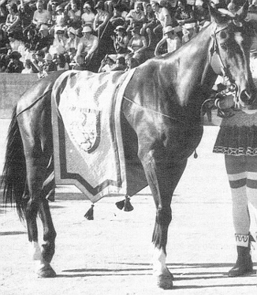

Corsi 20, vinti 8 anno di nascita: 1968 data contrada fantino note 1. 2 luglio 1972 OCA Giove 2. 16 agosto 1972 NICCHIO Rondone 3. 17 settembre 1972 1 BRUCO Canapino II 4. 2 luglio 1973 LUPA Tristezza 5. 16 agosto 1973 AQUILA Ercolino vinse scosso 6. 2 luglio 1974 LEOCORNO Bazza 7. 16 agosto 1974 SELVA Aceto 8. 17 agosto 1975 CHIOCCIOLA Aceto 9. 18 agosto 1976 CIVETTA Aceto 10. 2 luglio 1977 GIRAFFA Galletto 11. 16 agosto 1977 AQUILA Spillo 3 luglio 1978 - - non prescelto 12. 16 agosto 1978 LEOCORNO Liscio 13. 4 luglio 1979 LEOCORNO Liscio 14. 7 settembre 19801 SELVA Bastiano 15. 2 luglio 1981 CHIOCCIOLA Aceto 16. 2 luglio 1982 SELVA Aceto 17. 16 agosto 1982 CHIOCCIOLA Bazzino 18. 3 luglio 1983 GIRAFFA Moretto 19. 16 agosto 1983 GIRAFFA Moretto 20. 2 luglio 1984 VALDIMONTONE Bastiano 16 agosto 1985 - - non prescelto 2 luglio 1988 - - non prescelto
